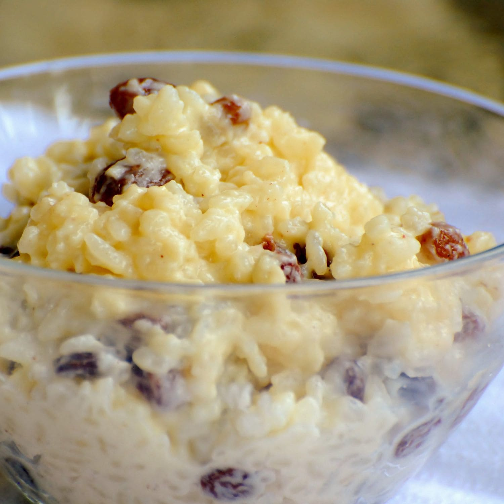

Creamy Rice Pudding
Description:
Rice pudding is a creamy mixture of rice and milk that is cooked until it's thick and soft. It can be sweet or savory. This raisin-studded dessert rice pudding is thickened with an egg, sweetened with sugar, and enhanced with vanilla.
Ingredients:
- Rice
- Milk
- Sugar
- Salt
- Egg
- Raisins
- Butter
- Vanilla
Steps:
- Cook the rice.
- Cook the cooked rice, some of the milk, sugar, and salt over medium heat until thick.
- Stir in the remaining milk, egg, and raisins. Cook for two more minutes.
- Remove from heat and stir in the butter and vanilla.